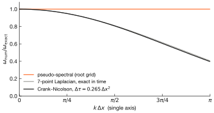
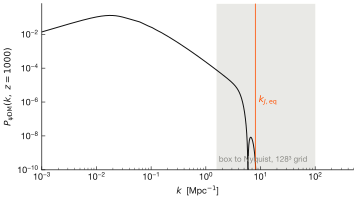
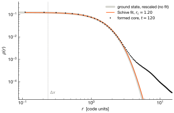
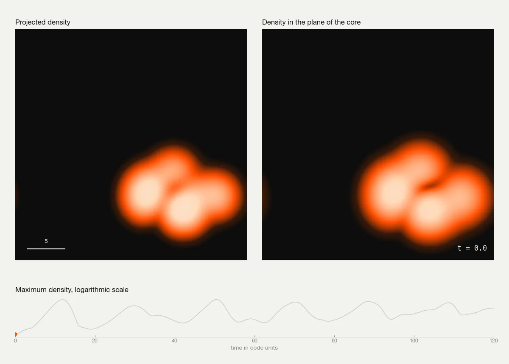
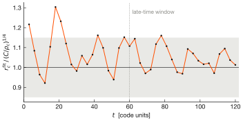
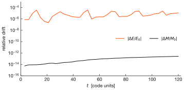

Evolving the dark universe as a single wave (ψDM)
A solver for the Schrödinger–Poisson equations in an expanding universe to model large-scale structure formation. The code starts from the matter power spectrum at redshift 1000 and follows the dark matter wavefunction as it collapses into halos with solitonic cores. It combines a pseudo-spectral method on the root grid with finite differences on adaptively refined patches, and it runs on GPUs and across MPI ranks. The project began as my master's thesis at CINVESTAV-IPN, Mexico, in 2014. The code has since been rebuilt and systematically tested.
Wave dark matter and its equations
It is well-known that the cold dark matter (CDM) model reproduces the large-scale distribution of matter in the universe. Unfortunately, its predictions on galactic scales are less satisfactory. On one hand collisionless simulations produce halos with central density cusps, whereas the rotation curves of many dwarf galaxies are consistent with constant-density cores. On the other, the same simulations predict more subhalos than the number of satellites observed around the Milky Way.
Wave dark matter, also called fuzzy dark matter (or psiDM), addresses these discrepancies with a boson of mass \(m \sim 10^{-22}\,\mathrm{eV}\) [3, 5]. The de Broglie wavelength of such a particle is of the order of a kiloparsec. At galactic occupation numbers the dark matter is described by a classical field \(\psi\) that obeys the Schrödinger–Poisson equations [7]. Quantum pressure suppresses gravitational collapse below a Jeans length, and every halo develops a stationary core, the soliton, embedded in an envelope of interference granules [1, 2]. A simulation must resolve the local de Broglie wavelength throughout the volume. This requirement motivates the adaptive grids described in §02.
In comoving coordinates \(\mathbf{x}\) with scale factor \(a(t)\), the field obeys the Schrödinger equation with a gravitational potential \(\Phi\) sourced by the density contrast \(\delta\).
The background is a flat ΛCDM universe with expansion rate
To have units that remove every physical constant from the equations, time is measured by \(\dd\tau = \dd t/(a^2 T_0)\) and lengths by \(L_0\), and the mean density is normalised to unity, with
Eq. 1 then takes the form:
Cosmology enters the dynamics only through the factor \(a\) in front of the potential and through the evolution of \(a(\tau)\). For \(m = 8\times10^{-23}\,\mathrm{eV}\), \(H_0 = 70\,\mathrm{km\,s^{-1}\,Mpc^{-1}}\) and \(\Omega_{m0}=0.27\), the (simulation) comoving length is \(L_0 = 23.2\) kpc and the time is \(T_0 = 21.9\) Gyr.
The Madelung substitution \(\psi = \sqrt{\rho}\,e^{\ii S}\) maps eq. 4 onto a continuity equation and an Euler equation with an additional quantum pressure term.
Linearising eq. 5 about a homogeneous background gives the Jeans wavenumber \(k_J = (16\pi G\rho\, m^2/\hbar^2)^{1/4}\). Modes with \(k < k_J\) grow, and modes with \(k > k_J\) oscillate. The resulting suppression of small-scale power is imposed in the initial conditions (see §03).
The evolution conserves the mass \(M=\int|\psi|^2\) and, in a static box, the energy \(E = \int \big(\tfrac12|\nabla\psi|^2 + \tfrac12 V|\psi|^2\big)\). The equations are also invariant under the scaling
which provides the parameter-free test of §04.
Discretisation and adaptive refinement
The Hamiltonian in eq. 4 separates into a kinetic term, diagonal in Fourier space, and a potential term, diagonal in real space. Strang splitting [8] applies a half potential kick, a full kinetic drift and a second half kick.
Every factor in eq. 7 has unit modulus, and each step is therefore unitary. The potential \(V^\ast\) of the second kick is computed from the density after the drift. A kick changes the phase of \(\psi\) and leaves \(|\psi|\) unchanged, which makes \(V^\ast\) the potential at the end of the step and keeps the scheme symmetric and second order. Reusing \(V^n\) reduces the method to first order. The test bench measures a convergence order \(p = 2.00\).
def strang_step(psi, k2_torch, V, a, d_tau, *, potential):
dt_half = d_tau / 2.0
psi = _kick(psi, V, a, dt_half) # psi * exp(-i a V dt/2)
psi = _drift(psi, k2_torch, d_tau) # exact in Fourier space
# V from the post-drift density: without this the scheme is first order
if potential is not None:
V = potential(torch.abs(psi) ** 2)
return _kick(psi, V, a, dt_half)On the periodic root grid the drift is exact in Fourier space for any \(\Delta\tau\), and the Poisson equation reduces to a division.
where \(k=0\) mode is set to zero. In a periodic volume the mean density is the cosmological background, whose effect is already contained in \(a(\tau)\).
At this point it is convenient to clarify that refined patches are subdomains of a larger grid and are not periodic, and a Fourier transform on a patch would couple opposite faces. The kinetic step on patches therefore uses the 7-point Laplacian, with Dirichlet ghost cells interpolated from the parent level, advanced with the Crank–Nicolson scheme
The discrete operator \(H_h\) is Hermitian. The Crank–Nicolson update is its Cayley transform and is unitary, as is the spectral step. With \(\alpha = \ii\Delta\tau/4\Delta x^2\) the update for a single cell reads
The implicit system is solved by red–black Gauss–Seidel iteration, implemented on the GPU as two masked array updates. Over-relaxation with \(\omega > 1\) diverges for this complex, weakly diagonally dominant system, and the simulation I use \(\omega = 1\).
alpha = 1j * d_tau / (4.0 * dx2)
rhs = (1.0 - 6.0 * alpha) * psi_old + alpha * neigh_old
denom = 1.0 + 6.0 * alpha
for it in range(max_iter):
for mask in (red_mask, black_mask):
neigh_new = sum_of_six_neighbours(psi_new_pad)
psi_jacobi = (rhs + alpha * neigh_new) / denom
psi_int[mask] = psi_jacobi[mask] # omega = 1, SOR diverges
if residual(psi_new_pad).abs().max() < tol:
breakThe spatial discretisation introduces a dispersion error at short wavelengths. For a plane wave the discrete frequencies are
to be compared with the exact value \(k^2/2\). At the timestep used in the simulation the temporal error is negligible and the stencil dominates. For a wave sampled by four cells per wavelength (\(k\Delta x = \pi/2\)) the phase velocity is 19% below the exact value and the group velocity 36% below. For this reason the refinement criterion below requires at least four cells per de Broglie wavelength.

Every level advances with the timestep
The first bound resolves the fastest kinetic phase rotation on the grid, and the second limits the phase added by a single potential kick. Because \(\Delta\tau \propto \Delta x^2\), halving the cell size multiplies the number of steps by four, and refined levels are therefore subcycled. The scale factor is integrated with a fourth-order Runge–Kutta method, with substeps that keep \(\Delta a/a \le 2\%\).
Adaptive mesh refinement
A cell is flagged for refinement when any of the three indicators in the table exceeds its threshold. Flags are dilated by one cell and grouped into blocks of 32³ cells. Each flagged block spawns a child level with twice the resolution, up to six levels.
| Criterion | Condition | Purpose |
|---|---|---|
| de Broglie | \(|\nabla S| = \big|\operatorname{Im}(\nabla\psi/\psi)\big| > \dfrac{2\pi}{N_\lambda\,\Delta x}\), \(N_\lambda = 4\) | at least four cells per local wavelength (fig. 1) |
| Density | \(\rho > 4\,\bar\rho\) | resolution in collapsed regions independent of the phase |
| Löhner [6] | \(\sqrt{\dfrac{\sum_d (f_{i+1}-2f_i+f_{i-1})^2}{\sum_d (|f_{i+1}-f_i|+|f_i-f_{i-1}|)^2+\epsilon}} > 0.5\) | normalised curvature of \(\rho\), \(\operatorname{Re}\psi\) and \(\operatorname{Im}\psi\), sensitive to sharp interference fringes |
At most 30% of the blocks are refined, in order of the number of flagged cells. The hierarchy is rebuilt every 500 root steps.
A child level advances in \(n_{\rm sub} = \lceil \Delta\tau_{\rm parent}/\Delta\tau_{\rm child}\rceil\) substeps. At substep \(j\) its ghost cells are trilinear interpolations of the parent, weighted in time between the old and new parent states.
The child does not solve the Poisson equation independently. Its potential is the interpolated parent potential plus a correction sourced by the density that the parent grid does not resolve.
After each parent step the fine solution is restricted to the parent grid. Each coarse cell receives the mean density of its \(2^3\) children and the phase of their mean amplitude.
This restriction conserves mass by construction and discards part of the phase information (§05).
Engine and cosmological interface
The engine is written in PyTorch, and the same code runs on NVIDIA GPUs, Apple silicon and CPUs. The kick, drift and Poisson kernels are compiled with torch.compile when CUDA is available. Physics, numerics and parallelism reside in separate modules, and each module can be tested in isolation.
| Module | Content |
|---|---|
engine/cosmology.py | unit system, growth rate, Zel'dovich velocity scale, \(P(k)\) interpolation |
engine/grids.py | meshes, \(k^2\), Gaussian random field for the initial wavefunction |
engine/solvers.py | spectral Poisson solver, kick and drift kernels, Strang step |
engine/level.py | grid level with ghost cells, Crank–Nicolson kinetic step and restriction |
engine/amr.py | refinement indicators, block patches, hierarchy rebuild |
engine/simulation.py | time integration with timestep control, subcycling, scale factor and output |
engine/halos.py | halo finder, soliton and NFW fits, physical units |
engine/parallel/ | MPI communicator, slab domain, distributed FFT, ghost exchange, HDF5 I/O |
run.py and bench.py | command interface (status, preflight, check, bigbang) and test bench |
In MPI runs the volume is divided into slabs along \(z\), one per rank. The three-dimensional FFT is computed in stages. A two-dimensional FFT in \((x,y)\) is applied to each slab, a single Alltoallv redistributes the data into slabs along \(x\), and a one-dimensional FFT is applied along \(z\). The inverse transform reverses these operations. With a single rank the layer reduces to torch.fft.fftn, and the test bench verifies that both paths give identical results.
The command python run.py preflight prints all settings and the derived quantities before a run starts. These include the simulation units, cell size, Nyquist wavenumber, a lower bound on the number of steps, the memory required and the list of known open issues. The test bench groups its tests into eight independent layers, from FFT primitives to halo catalogues, and an error can be traced to the layer in which it originates.
Cosmology and code
All physical input is defined in three dataclasses in run.py, and the solver derives every quantity in simulation units from them. The table below follows each cosmological parameter from its definition to the function in which it acts.
@dataclass
class Cosmology:
H0_km_s_Mpc: float = 70.0
Omega_m0: float = 0.27
Omega_L0: float = 0.73
m_boson_eV: float = 8.0e-23
z_ini: float = 1000.0
z_final: float = 0.0
pk_file: str = "ic/psidm_pk_z1000.txt"
@dataclass
class Box:
L_box_Mpc: float = 4.0
nx: int = 128; ny: int = 128; nz: int = 128| Parameter | Role in the simulation | Default and derived value |
|---|---|---|
| boson mass \(m\) | length unit \(L_0=\sqrt{\hbar T_0/m}\) | 8×10⁻²³ eV, \(L_0\) = 23.2 kpc |
| matter density, Hubble rate \(\Omega_{m0},\,H_0\) | time unit \(T_0\) and \(\dd a/\dd\tau\) | \(T_0\) = 21.9 Gyr |
| dark energy \(\Omega_{\Lambda 0}\) | \(E(a)\) in the expansion and the growth rate | 0.73 |
| box size \(L_{\rm box}\) | \(L = L_{\rm box}/L_0\), \(\Delta x = L/n\) | 4 Mpc, 172.5 \(L_0\), \(\Delta x\) = 1.35 |
| initial redshift \(z_{\rm ini}\) | \(a_{\rm ini}\) multiplies \(V\) in every kick | 1000, \(a\) = 9.99×10⁻⁴ |
| primordial spectrum \(P(k)\) | amplitude of \(|\psi|\) | CLASS × FDM transfer |
| linear growth rate \(f \simeq \Omega_m(a)^{0.55}\) | phase of \(\psi\) | vel_scale = 0.0258 |
| virial overdensity \(\Delta_c(z)\) | halo boundary in units of \(\bar\rho\) | \(\Delta_c/\Omega_m\) = 359 at z = 0 (Bryan–Norman) |
The boson mass, the Hubble constant and the matter density enter the simulation through physical_units in engine/cosmology.py, which returns the units \(L_0\) and \(T_0\). The class MPISchrodingerPoisson in engine/simulation.py converts the box size to code units, evaluates the expansion rate with \(\Omega_{\Lambda 0}\) in its method da_dtau and advances the scale factor in advance_a. The initial redshift fixes the starting scale factor of the root level in engine/parallel/level.py. The power spectrum is sampled in wavefunction_ic in engine/grids.py and in its distributed counterpart MPILevel._generate_ic, and the growth rate that sets the phase of \(\psi\) is computed in velocities_cosmo in engine/cosmology.py. The virial overdensity is defined in the class Units in engine/halos.py.
The initial conditions are generated in four stages. The Boltzmann code CLASS [9] computes the CDM power spectrum at z = 1000. This spectrum is multiplied by the square of the wave dark matter transfer function of Hu, Barkana and Gruzinov [3], given in eq. 16. A Gaussian random field with the resulting spectrum is then drawn on the grid, and the wavefunction is constructed from this field with eq. 17.
At the initial redshift wave dark matter differs from CDM through a cutoff in the power spectrum near the Jeans scale at matter–radiation equality. The cutoff is described by the transfer function [3]
A Gaussian random field is drawn with \(\hat\delta(\mathbf{k}) = \eta_{\mathbf{k}}\sqrt{P(k)\,N/V}\), where \(\eta_{\mathbf{k}}\) is complex white noise. The density fixes the modulus of \(\psi\). The phase follows from the linear continuity equation \(\partial_\tau\delta = -\lap S\) for the growing mode \(\delta \propto D(a)\).
The sign of \(\hat S\) selects the growing mode. With the opposite sign the velocities excite the decaying mode, and linear growth reaches only 0.21 of the correct value. The test bench evolves the output of the generator and recovers \(\delta \propto a\) to within 7%.

ic/psidm_pk_z1000.txt for \(m_{22}=0.8\). The grey band extends from the fundamental mode to the Nyquist wavenumber of the default 4 Mpc, 128³ box and contains the full cutoff.The conversion to physical units takes place at output. The class halos.Units converts code densities to \(M_\odot\,\mathrm{pc}^{-3}\) and cells to proper kpc at the current \(a\). It also computes the virial overdensity of Bryan and Norman [4], and cores are fitted with the soliton profile of Schive et al. [1].
The spherical-overdensity halo finder smooths the density field before locating peaks, which prevents interference granules from being identified as halos. Each halo is fitted with the soliton profile in the core and with an NFW profile outside it. Fits that reach the boundary of the search range, and cores narrower than two cells, are reported as unresolved.
Results and validation
Soliton formation
This test does not involve cosmology. Eight Gaussian concentrations of wave matter with random phases are placed in a periodic box with \(G = 1\). The initial state contains no soliton. The system collapses, relaxes and forms a central core.
The scaling invariance of eq. 6 gives a prediction without free parameters. The ground state computed by imaginary-time evolution fixes \(C = \rho_c r_c^4 = 0.2429\), and any soliton must then satisfy \(r_c = (C/\rho_c)^{1/4}\) independently of its mass. The core formed in the simulation is fitted at every snapshot, and its radius is compared with this prediction.
The box has a side length of 30 code units and is divided into 128 cells along each axis. Each of the eight clumps has a mass of 0.6 in code units. The system is evolved up to \(t = 120\), which requires 8,760 time steps and 36 minutes on the CPU of an Apple M1 Pro. Over the second half of the run the fitted core radius is on average 1.05 times the predicted value, with a standard deviation of 0.06. At the end of the run the soliton contains 59% of the total mass. The total mass departs from its initial value by at most a fraction \(2.6\times10^{-13}\), and the total energy by at most \(3.7\times10^{-5}\).




| Quantity | Value |
|---|---|
| median rms deviation of the core from the Schive profile | 0.055 |
| late-time deviation of \(r_c\) from the ground-state invariant | 4.9% |
| core radius of the reference ground state | 6.0 cells |
| smallest core radius of the formed soliton | 4.4 cells |
Cosmological runs
The complete pipeline starts from the initial conditions of fig. 2 in a 4 Mpc box with adaptive refinement enabled and evolves them to redshift zero with python run.py bigbang, or with mpirun -np N python run.py bigbang in parallel. The run writes HDF5 checkpoints, density slices, the final matter power spectrum and a halo catalogue with core radii and core masses in physical units.
Test bench
The command python run.py check runs 33 tests in eight layers. Each test compares the code with an independent reference, such as an analytic solution, a conservation law, a convergence rate or the input supplied to the code. The full suite runs in 36 s on an Apple M1 Pro CPU. The table lists a selection of the tests.
| Test | Result |
|---|---|
| Poisson solve against the analytic single-mode potential | relative error 6.0×10⁻⁸ |
| free Gaussian packet spreads at the analytic rate | width 1.4142, exact 1.4142 |
| Strang splitting convergence order | p = 2.00 |
| unitarity over 200 steps (float64) | norm changes by 5.6×10⁻¹⁴ |
| a converged soliton stays stationary in real time | peak density changes by 2.6×10⁻³ |
| kinetic and source coefficients in code units equal 1 | 1.000000, 1.000000 |
| \(a(\tau)\) reaches \(a=1\) at z = 0 | error 1.4×10⁻⁷ |
| initial velocities excite the growing mode | 1.07 times linear theory |
| restriction from a child conserves mass | relative error 7.4×10⁻⁵ |
| AMR moves a coarse run toward a fine reference | small-scale power from 0.4 to 0.6 of the reference |
| single-rank distributed path reproduces the serial solvers | identical to the last bit |
| halo finder recovers an injected soliton | core radius within 0.3%, core mass within 0.7% |
| an unresolved core is reported as unresolved | flagged as unresolved |
Limitations and next steps
The following issues are reported by the test bench and remain open.
- The soliton test at 128³ is at the limit of its resolution. At maximum compression the core radius of the formed soliton spans 4.4 cells, compared with 6.0 cells for the reference ground state. The measured core radius agrees with the prediction, but convergence has not been demonstrated at 256³.
- The patch boundaries dominate the AMR error. After one short step the error on the faces of a child patch is 2.5×10⁻⁴, compared with 1.1×10⁻⁵ in its interior. Higher-order prolongation of the ghost cells should reduce it.
- Restriction does not preserve the phase exactly. Creating a child and restricting it without any evolution changes \(\psi\) by 5.5×10⁻³ while conserving mass. A conservative restriction of \(\operatorname{Re}\psi\) and \(\operatorname{Im}\psi\) followed by a norm correction is the planned replacement.
- The default
sigma_delta = 0.05rescales the initial field to about ten times the amplitude of the loaded \(P(k)\), and the evolution becomes non-linear at \(z \approx 49\) instead of \(z \approx 4\). This setting is intended for short tests. Withsigma_delta = Nonethe generator reproduces the input amplitude to within 2%. - The MPI layer has been verified with a single rank only. The ghost-cell exchange between several ranks has not yet been run on a system with
mpi4py. - The Bogoliubov solver of the side study in
fdm_qg/reproduces its analytic references, but its quantum-gravity operator is only real-linear. Its eigenvalues require the 2×2 \((u,v)\) formulation before they can be used.
Code
The solver, the test bench and the reproducible soliton test are at github.com/fuentesigma/psidm-solver under GPL-3.0. The bench there reports 22 passed, 5 warnings and 1 skipped on a machine without mpi4py, the skip being the multi-rank path. The Bogoliubov side study is not part of that package.
References
- H.-Y. Schive, T. Chiueh, T. Broadhurst, Cosmic structure as the quantum interference of a coherent dark wave, Nature Physics 10, 496 (2014).
- H.-Y. Schive et al., Understanding the core–halo relation of quantum wave dark matter from 3D simulations, Phys. Rev. Lett. 113, 261302 (2014).
- W. Hu, R. Barkana, A. Gruzinov, Fuzzy cold dark matter: the wave properties of ultralight particles, Phys. Rev. Lett. 85, 1158 (2000).
- G. L. Bryan, M. L. Norman, Statistical properties of X-ray clusters: analytic and numerical comparisons, ApJ 495, 80 (1998).
- L. Hui, J. P. Ostriker, S. Tremaine, E. Witten, Ultralight scalars as cosmological dark matter, Phys. Rev. D 95, 043541 (2017).
- R. Löhner, An adaptive finite element scheme for transient problems in CFD, Comput. Methods Appl. Mech. Eng. 61, 323 (1987).
- L. M. Widrow, N. Kaiser, Using the Schrödinger equation to simulate collisionless matter, ApJ 416, L71 (1993).
- G. Strang, On the construction and comparison of difference schemes, SIAM J. Numer. Anal. 5, 506 (1968).
- J. Lesgourgues, The Cosmic Linear Anisotropy Solving System (CLASS) I: Overview, arXiv:1104.2932 (2011).